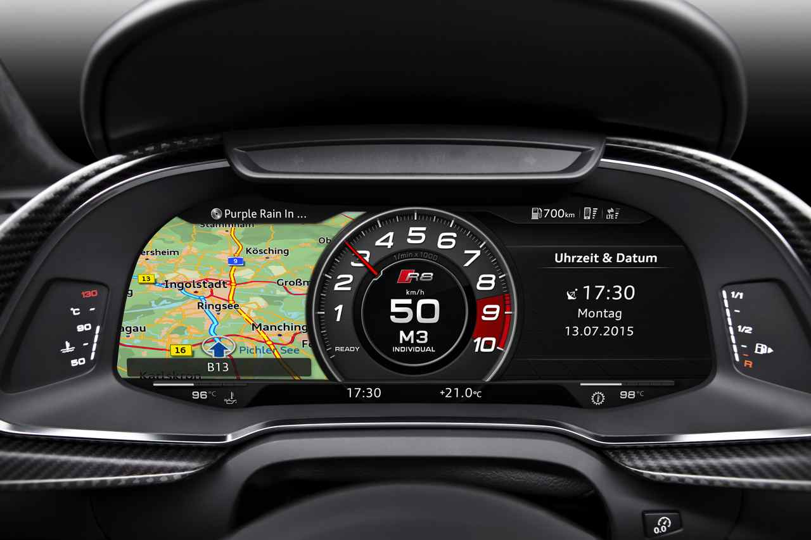
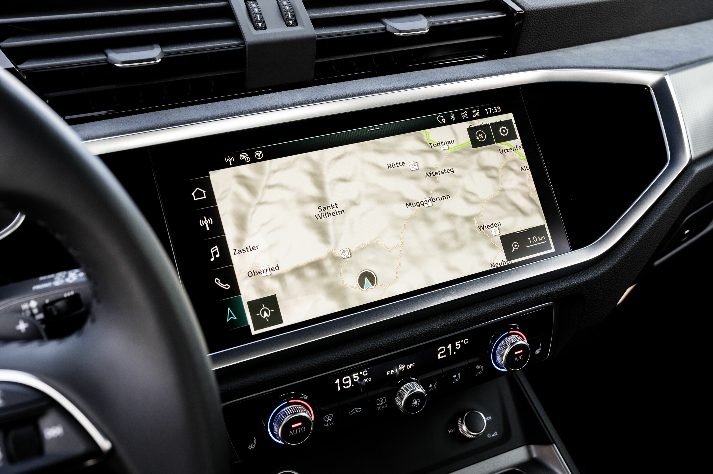

El Virtual Cockpit de Audi es un sistema de panel de instrumentos totalmente digital y personalizable que reemplaza los medidores tradicionales con una pantalla de alta resolución. Permite al conductor visualizar información crucial de manera clara y configurable según las preferencias individuales.

Audi MMI Navigation Plus
El sistema MMI Navigation Plus de Audi integra navegación GPS avanzada con pantalla táctil y control por voz. Proporciona mapas detallados, información de tráfico en tiempo real y permite la integración de smartphones para una conectividad fluida.

Audi Connect
Audi Connect ofrece servicios conectados que mejoran la experiencia de conducción, incluyendo acceso a información de tráfico en tiempo real, puntos de interés, noticias y actualizaciones de estado del vehículo. También permite la conexión con dispositivos inteligentes y la gestión remota a través de la aplicación Audi.